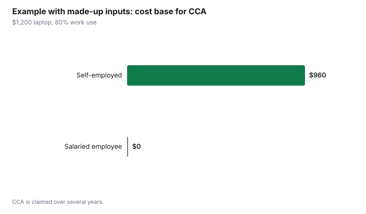

Technology · Canada
Can You Deduct a Computer or Monitor for Work in Canada? What CRA Allows
In Canada, employees generally cannot deduct the cost of buying a computer or monitor for work, even if they work from home and have a signed Form T2200 from their employer. CRA does not allow employees to claim the purchase price or capital cost allowance (CCA) on that equipment. Commission employees may deduct a reasonable portion of the cost to lease a computer used for work. Self-employed people are different: they can claim CCA on computer hardware for the business-use portion. Ask your employer about reimbursement first.
Key takeaways
- Salaried employees: no deduction for buying a computer, monitor or laptop, and no CCA.
- Commission employees: may deduct a reasonable part of the lease cost of a computer used for work.
- Employees with a T2200 may claim eligible home office expenses and supplies under the detailed method.
- Self-employed: claim CCA on computer hardware (Class 50) for the business-use share.
- Ask your employer about reimbursement or an allowance; tax rules on those vary.
What CRA allows
| Situation | Buying a computer or monitor | Leasing | Notes |
|---|---|---|---|
| Salaried employee | Not deductible; no CCA | Not deductible | Home office expenses with a T2200 under the detailed method |
| Commission employee | Not deductible; no CCA | Reasonable portion of lease cost deductible | T2200 required |
| Self-employed | CCA on the business-use portion | Business-use portion of lease cost | Keep records of business use |
What employees may claim
Employees whose employer signs Form T2200 may claim eligible home office expenses under the detailed method, such as a portion of utilities and rent, and some supplies used directly in their work. CRA's list of expenses you can claim spells out what qualifies; computers, monitors and furniture are capital items and are not on it. Keep the T2200, receipts and your workspace calculation.
Self-employed: capital cost allowance
If you are self-employed, computer hardware is generally Class 50 for CCA. You claim a share of the cost each year, limited to the business-use portion. Keep the receipt and a record of how much you use it for business. A tax professional can confirm the claim for your situation.
Ask about reimbursement
Many employers reimburse equipment or provide it. A reimbursement for equipment the employer owns is generally not a taxable benefit, while some allowances can be taxable. Ask your employer how its program is treated.
Example with made-up inputs: same laptop, two workers
These numbers are an example with made-up inputs, not tax advice. Both buy a $1,200 laptop used 80% for work.
| Worker | Can deduct the purchase? | Business-use cost base for CCA |
|---|---|---|
| Salaried employee | No | $0 |
| Self-employed | Through CCA over time | $960 |

Sources
- CRA, Line 22900 Other employment expenses and T4044 Employment Expenses, as of 1 Oct 2026. Employees cannot deduct the cost or CCA of a computer; commission employees may deduct a reasonable portion of lease costs.
- CRA, Home office expenses for employees: expenses you can claim (detailed method, T2200), as of 1 Oct 2026.
- CRA, capital cost allowance classes, as of 1 Oct 2026. Class 50 for general-purpose computer hardware.
- The amounts in the example table and chart are made-up inputs.
Frequently asked questions
Can employees deduct a laptop in Canada?
Generally no. CRA does not allow employees to deduct the purchase price or capital cost allowance of a computer, even with a T2200.
Can I deduct a monitor for working from home?
Not as an employee. A monitor is a capital item. Self-employed people can claim CCA on the business-use portion.
What can commission employees deduct?
A reasonable portion of the cost to lease a computer used for work, with a T2200.
What home office expenses can employees claim?
With a signed T2200, eligible expenses under the detailed method, such as a share of utilities and rent and some supplies. Check CRA's list.
How do self-employed people deduct a computer?
Through capital cost allowance, generally Class 50, for the business-use portion.
Researched and drafted with AI assistance and fact-checked against official Canadian sources. How we create content.
Disclosure: No products or services are named or ranked. Saving Optimizer may earn a commission if a partner link is added later; no partnership is claimed. Education only. This is not tax advice; check CRA guidance or a tax professional.